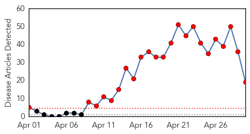
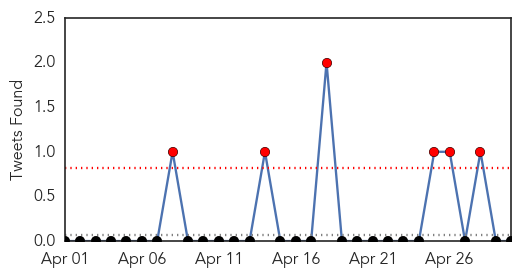
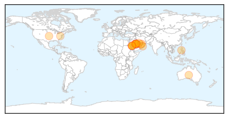
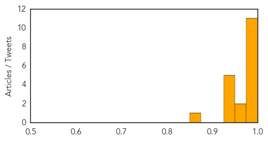

Toggle navigation
Early Warning
Daily Alerts
Middle East Respiratory Syndrome
Apr 30, 2014
Compare to:
-
Dengue Fever
Hemmorhagic Fever
Mold/Fungal Infection
Influenza
Meningitis
Pertussis / Whooping Cough
Cholera
Hepatitis
Chikungunya
Yellow Fever
Bubonic Plague
West Nile Virus
Swine Flu
Ebola
Measles
Unknown
Mumps
30 Day Trends
Web: 23
alerts
, 0
warnings
Twitter: 9
alerts
, 0
warnings
Top Articles:
1.000
Boil Your Camel Milk If You Don't Want to Get MERS
1.000
Don't Panic About MERS Yet, Health Experts Say
0.999
Saudi Announces 3 New MERS Deaths, Toll Hits 105 — Naharnet
0.999
WHO announces seven new cases of Middle East respiratory syndrome in United Arab Emirates
0.995
New Guidelines for MERS Virus Prevention in UAE
0.995
MERS surge continues; April cases top past 2 years' total
0.995
Camels may be main carrier of MERS virus
0.993
Saudi MERS count grows by 6 as WHO experts arrive
0.991
Saudi Arabia reports 3 coronavirus deaths
0.987
Mers not a public health concern, says HAAD
0.986
Egyptians urged not to travel to Saudi Arabia over fears of deadly MERS virus
0.970
Gulf Daily News Local News Bahrain free of coronavirus infection says expert
0.965
Mers: Saudi urges old or diseased to postpone Haj
0.945
Umrah pilgrims are free from coronavirus: QadiSaudi Arabia
0.942
Elderly, people with chronic diseases urged to postpone HajTravel & Tourism
0.938
Saudi schools on alert after Mers cases shoot upHealthcare
0.929
MERS breakthrough claimed as toll hits 105Saudi Arabia
0.927
Baguio Midland Courier Website
0.851
Novel drug treatment against deadly Marburg virus shows promise against other diseases
Top Tweets:
No tweets found for Apr 30, 2014
Web/News Articles

Tweets

Article Locations

Article Confidences
